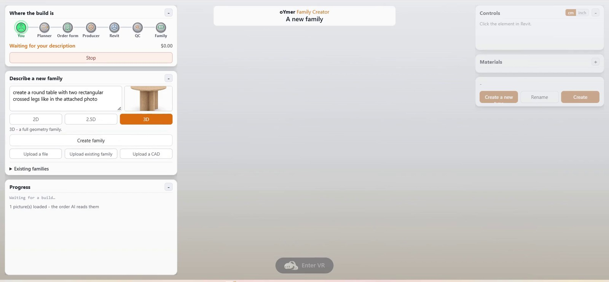
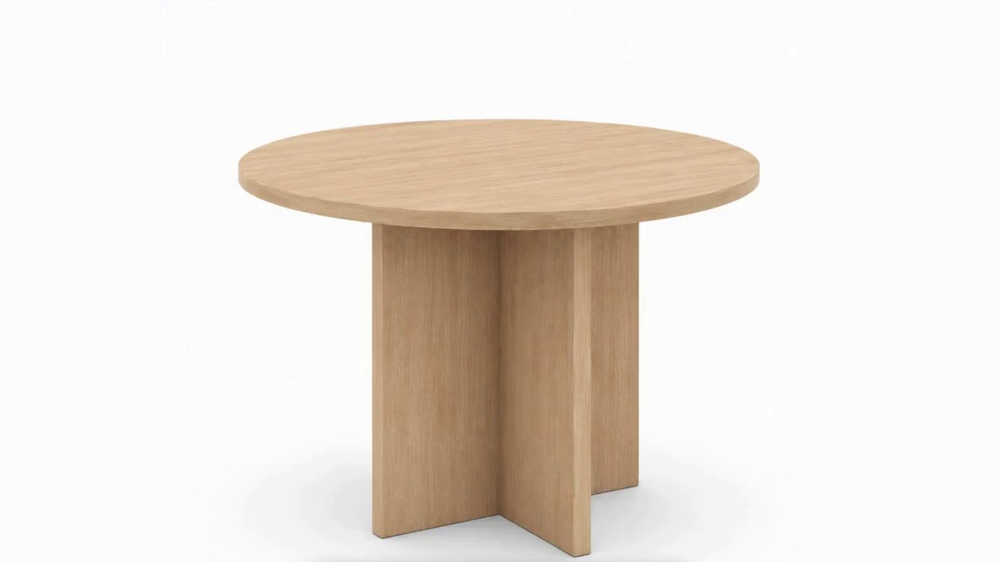
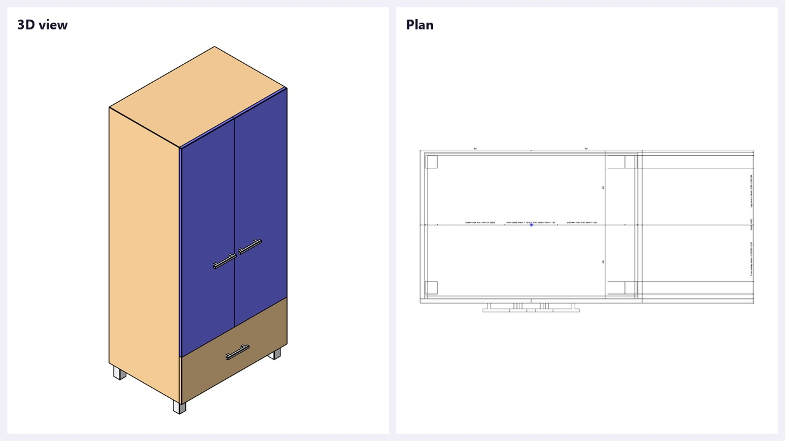
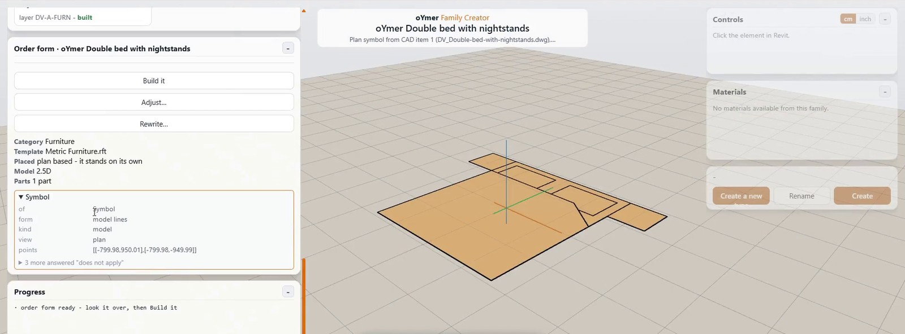
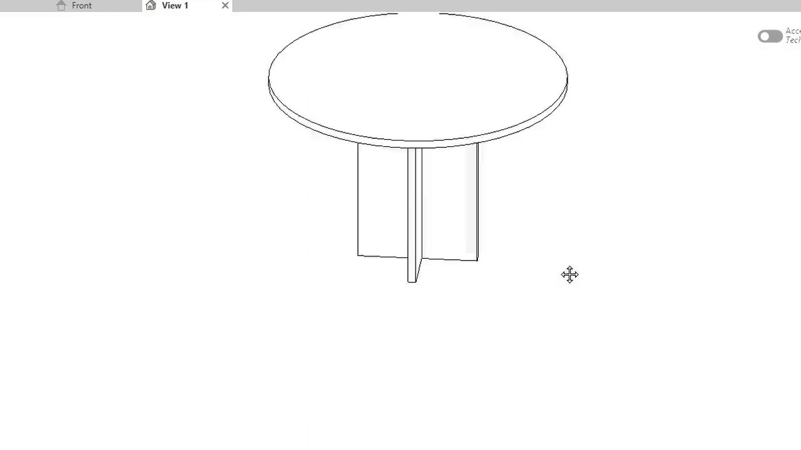
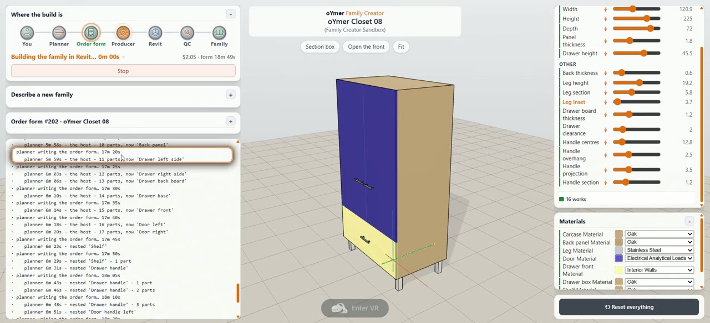
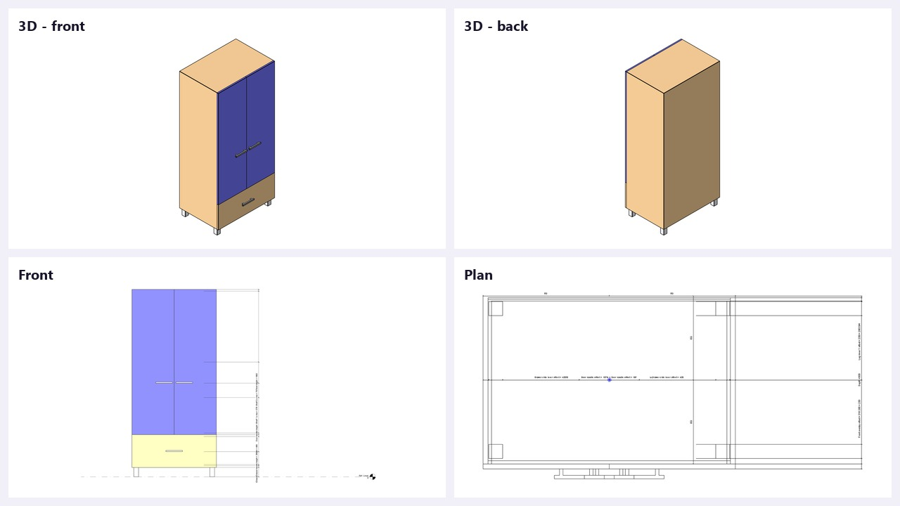
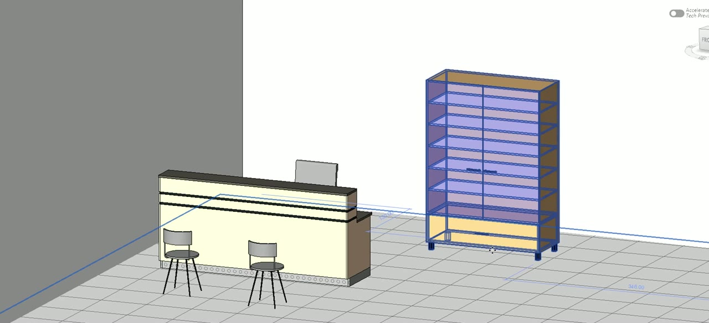

Who is it for?
Anyone who needs a Revit family - from a first-timer to an office that sets the standard.
oYmerFamily Creator
Casual builders
No expertise needed. Plain words in, a professional family out.
Manufacturers
A product catalogue or a DWG sheet becomes Revit families.
BIM managers
The experts: name the category, nested parts, arrays and parameter types - and keep one set of rules.
Large offices
Develop and keep office standards across every family.
Interior & furniture designers
Their own pieces as live families, sized by sliders.
Small offices
Families on demand - no family specialist on staff.
How it works
From one sentence to a parametric Revit family in your project, in a couple of steps. The AI plans. Fixed machinery builds, checks and measures. One human check sits in the middle, before anything is built.
1
Type what you want, in your own words
Any language, free text. No form to fill in and no terms to learn. A beginner types two words; an expert says exactly which parts are nested families and which are arrays.
- Two words
do it
With a photo attached, that is enough. The AI reads the photo. - Any language
mesa redonda con pata cruzada, de 90 a 120 de diámetro
Spanish, Hebrew, German - the order comes back in English. - Free text
a closet with 4 legs, a bottom drawer with handle, two upper doors with handles and 2-5 shelves indise
The real prompt behind Closet 08, typo included. - Expert
Furniture. Closet 900x600x2000. Door = nested family, swappable, handle nested in the door. Shelves = array, count 2-5. Legs = group. Sliders: Width, Height, Number of shelves. Panel thickness = type parameter, Width = instance.
An expert can define
- The family category
- Which parts are nested families
- Grouping or arrays
- The required sliders
- Type or instance parameters
- Ranges and default values
- Materials per part
- Anything left out, the AI decides
2
Attach a file (optional)
A file gives the AI what is hard to say in words: shape, proportion and real sizes.
A photo
A product photo from a catalogue or a maker's site. The round table with the crossed leg came from this one.
An existing family to fix
Upload a family and say what to change: make the leg corners round.
CAD, one item
A bed from a DWG. One item becomes one family, with no AI at all. The units are asked, never guessed.
CAD, many items
A whole catalogue sheet becomes one family per item, side by side.


3
Choose the family kind: 3D, 2.5D or 2D
Three buttons under the prompt, picked before Create. The choice goes to the AI with the prompt, so the right Revit template is chosen from the start.
3D
A full geometry family: solids, voids, nested parts and arrays. It shows in plan, elevation, 3D and renders. Furniture, casework, windows, fixtures.
2.5D
Our own term: a model family with no height - model lines and a masking region, no solids. Light and clean in plan. Ideal for CAD items like beds, sanitary ware and furniture layouts.
2D
No 3D geometry at all: a detail item, an annotation, a tag, a symbol or a title block. It has its own Revit template.

4
Think it through with the AI (optional)
Cognitive Scaffolding. Instead of guessing, the AI asks: only what only you can answer, and only when the answer changes the parts. Each answer builds on the last until the request is complete. Nothing is built before you agree.
A misunderstanding here costs one sentence, not a whole family. Every decision the AI made for you is shown in bold, so you can see it and change it.
YOUa closet for a kids room
AITwo questions before I plan. Doors - hinged or sliding? Shelves - a fixed number, or a slider, for example 2-5?
YOUhinged, 2 doors. shelves 2-5
AIA drawer under the doors, full width?
YOUyes, one drawer, 300 high
AI - THE ORDER, IN YOUR WORDS
- Closet, 2 hinged doors with handles
- Shelves: 2-5, on a slider
- 1 drawer, full width, 300 mm
- Width 800-1200 - my choice, change it
5
Press Create. The AI writes the order and plans it
Two AI calls, and that is all. Everything else is machinery. You see live what the AI is doing, how long it has taken and what it has cost.
The order
The product, the category and the template. Which parts are nested families. Every size, with a range. Read back to you in your own words.
The plan
22 answers for every part: reference planes, locks, parameters and ranges, material, visibility, arrays and formulas.
The paper gate
Before Revit even opens, the whole plan is checked - no AI, no Revit. A fault caught here costs one short call, not a whole build.
6
The order form: see the family before it is built
A full preview of the family before it is built in Revit.
Preview the family
Every part is drawn where it will stand. Click a part to open its card - the answers the AI planned for it.
Origins
The origin and the reference planes - where the family is held in your project.
Section box
Cut the family open and look inside: shelves, drawer, board thickness.
Sliders
Every parameter with its range. Drag, and the drawing updates at once - no Revit, no AI.
Materials
A material for every part, from your own project's materials.
7
Human approval
This is the time to adjust, rewrite, or approve and build the planned family.
Build it
Approve. The form, with the values you set on the sliders, goes to the build.
Adjust
Change one thing, in words: make the legs round. Only that part is planned again.
Rewrite
Wrong direction? Write it again and the AI plans from the start.


8
Revit builds it, one command at a time
Fixed code with no AI builds the family the way a professional would. Every step is printed to the log as it runs.
- New family from a template - Furniture, Casework, Generic Model
- Reference planes and the pinned origin
- Geometry - extrusion, blend, revolve, sweep, void
- Parameters and dimensions, with the ranges from the form
- Nested families - a handle in a door in a closet
- Arrays - shelves as a real Revit array, the count as a parameter
- Formulas - last, when everything they name exists
- Locked faces and materials, then save

9
Quality control: measured, not guessed
The finished family is checked automatically, inside Revit. Every slider is driven to three values:
Minevery slider to its lowest
Maxevery slider to its highest
Defaultback to the start value
In every state, every part is measured: its bounding box and its volume. The volume is what sees a hole.
A count, like the shelves, is proven by counting the solids - never by reading the parameter back.
Revit takes pictures from several views, and the pictures are judged against the order.
A failure goes back to the plan with the exact reason.
Gate14 / 14 checks passed

10
Load it into your project
The result is a normal Revit .rfa file. No add-in and no dependency on us - any office can open it. It is saved with its plan and its build log:
Family Catalogue/
closet-08/
oYmer Closet 08.rfa # the family
plan.json # the plan
build.log # the Revit log
- In Revit, Insert - Load Family, or load it straight from the panel.
- Place it. Every parameter is live in Properties.
- Make your own types - the ranges stay in the family.

A catalogue for your families
Every family that passes QC goes into the catalogue, with its plan, its log and its parameters. One place to find, open, change and load.
Search families
AllFurnitureCaseworkGeneric Models
| Family | Category | Parameters | QC | |
|---|---|---|---|---|
| oYmer Closet 08 | Furniture | Panel thicknessDrawer heightNumber of shelves | SlidersLoad | |
| oYmer Closet 01 | Furniture | HeightLeg heightDrawer front heightNumber of shelves | SlidersLoad | |
| oYmer Closet 03 | Casework | Drawer heightNumber of shelves | SlidersLoad | |
| oYmer Bar Handle 04 | Generic Models | Handle centresHandle projectionHandle section | SlidersLoad | |
| oYmer Shelf Board 04 | Generic Models | Board widthBoard depthBoard thickness | SlidersLoad |
Find
Search by name, category or parameter.
Open on sliders
Every family opens again in the order form, with its ranges.
Change
Adjust an existing family in words, without starting from zero.
Reuse parts
Handle, shelf, door - every nested part is a family of its own.